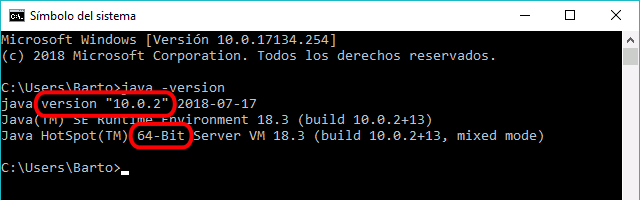
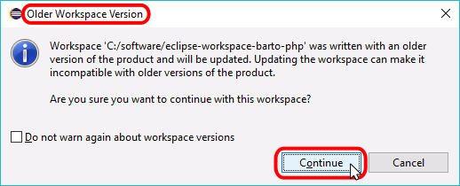

En esta página se explica cómo conseguir e instalar Java y Eclipse for PHP developers (Eclipse PHP) en Windows:
Eclipse PHP es un programa Java por lo que se se necesita tener instalado Java Runtime Environment. Tanto Eclipse como Java están disponibles en versiones de 32 bits y de 64 bits, pero tenga en cuenta que se deben instalar versiones del mismo tamaño de bits (ambas de 32 bits o ambas de 64 bits).
Si está utilizando Windows de 64 bits, se recomienda instalar las versiones de 64 bits. Pero si está utilizando un Windows de 32 bits, necesita instalar las versiones de 32 bits.
Conseguir Java Runtime Environment para Windows
Para comprobar si ya se tiene Java Runtime Environment instalado, puede abrir una ventana de Símbolo de sistema (o cmd) y ejecutar el comando java -version.
Si Java no está instalado, Windows mostrará un mensaje indicando que no encuentra Java:
Si Java está instalado, Windows mostrará un mensaje indicando la versión instalada:

Si necesita instalar Java Runtime, tenga en cuenta que la última versión de Java 10 (actualmente, septiembre de 2018, la última versión publicada) sólo está disponible en 64 bits. La última versión de Java disponible en 32 bits es Java 8. Tenga en cuenta que Oracle dejará de publicar actualizaciones de Java 8 en enero de 2019.
Las páginas de descarga de Java son las siguientes:
En cdlibre.org hay una sección dedicada bibliotecas de sistema desde la que se puede descargar la última versión de Java Runtime Environment para Windows (64 bits).
Conseguir Eclipse for PHP developers para Windows
En este curso se aconseja utilizar el editor Eclipse for PHP Developers (Eclipse PHP).
La última versión disponible actualmente (septiembre de 2018) en la web de Eclipse es la versión Eclipse for PHP developers 2018-09, publicada el 19 de septiembre de 2018, basada en la plataforma Eclipse 4.9 y el plug-in Eclipse PDT 6.1.
Estos son los enlaces de descarga de Eclipse PHP 2018-09:
Si se está utilizando Windows de 64 bits, se recomienda instalar la versión de 64 bits de Eclipse PHP (aunque también se podría instalar la de 32 bits). Pero si se está utilizando Windows de 32 bits, se necesita instalar la versión de 32 bits.
Al empezar el curso 2018/19 la última versión disponible era la versión Eclipse for PHP developers Photon, publicada el 27 de junio de 2018, basada en la plataforma Eclipse 4.8 y el plug-in Eclipse PDT 6.0.
Estos son los enlaces de descarga de Eclipse PHP Photon:
En cdlibre.org hay una sección dedicada a editores específicos para PHP, desde la que se puede descargar la última versión disponible de Eclipse PHP para Windows (64 bits).
Instalar Eclipse for PHP developers en Windows
Eclipse for PHP developers (Eclipse PHP) no se distribuye con instalador, sino como un archivo zip que contiene una carpeta eclipse-php que incluye todos los componentes necesarios (excepto Java Runtime, que debe descargarse e instalarse previamente). En Windows el archivo zip se puede descomprimir en cualquier carpeta en la que el usuario tenga permisos y crear un acceso directo al programa eclipse.exe.
Se pueden tener varias versiones de Eclipse PHP instaladas en el mismo ordenador, cada una en su propia carpeta.
En este curso se aconseja instalar Eclipse PHP 2018-09 en la carpeta C:\software\eclipse-php-1809 y crear un acceso directo en el escritorio al programa eclipse.exe (C:\software\eclipse-php-1809\eclipse.exe).
Nota: Al empezar el curso 2018/19 se aconsejó instalar Eclipse PHP Photon (la versión disponible entonces) en la carpeta C:\software\eclipse-php-photon y crear un acceso directo en el escritorio al programa eclipse.exe (C:\software\eclipse-php-photon\eclipse.exe).
Eclipse PHP guarda toda la información de configuración y de trabajo en los llamados espacios de trabajo (workspace). Se pueden tener varios espacios de trabajo en el mismo ordenador y al iniciar Eclipse PHP se puede elegir el espacio de trabajo en el que se va a trabajar. En este curso se aconseja guardar el espacio de trabajo en la carpeta C:\software\eclipse-workspace-nombre-de-usuario-php, como se explica en la lección Configuración de Eclipse PHP (1).
Los espacios de trabajo de una versión se pueden en principio usar en otra versión posterior, pero no al contrario. Al abrir un espacio de trabajo de una versión anterior, Eclipse avisa si es necesario hacer una conversión automática. Por otro lado, para no tener que empezar desde cero, la configuración de un espacio de trabajo se puede exportar e importarla en otro.
Actualizar Eclipse for PHP developers en Windows
Si quiere evitar cualquier tipo de problemas entre las diferentes versiones de Eclipse PHP, al instalar una nueva versión haga una instalación separada:
instale la nueva versión de Eclipse PHP en una carpeta distinta a la de la versión anterior
cree una nueva carpeta para un nuevo espacio de trabajo (workspace), distinta a la carpeta del espacio de trabajo de la versión anterior
abra la nueva versión de Eclipse PHP y elija el nuevo espacio de trabajo
configure el nuevo workspace
compruebe que el nuevo Eclipse PHP funciona correctamente
al cabo de un tiempo, borre la versión antigua de Eclipse PHP y el antiguo espacio de trabajo
Esta opción tiene el inconveniente de que es necesario configurar el nuevo Eclipse PHP desde cero.
Si quiere reutilizar el antiguo espacio de trabajo:
instale la nueva versión de Eclipse PHP en una carpeta distinta a la de la versión anterior
abra la nueva versión de Eclipse PHP y elija el antiguo espacio de trabajo (workspace).
Eclipse PHP mostrará un aviso indicando que el espacio de trabajo fue creado por una versión anterior de Eclipse PHP y que su actualización a la nueva versión puede hacerlo incompatible con la versión anterior:

compruebe que el nuevo Eclipse PHP funciona correctamente
al cabo de un tiempo, borre la versión antigua de Eclipse PHP
Esta opción tiene el inconveniente de que el espacio de trabajo puede quedar inutilizable para la versión anterior de Eclipse.